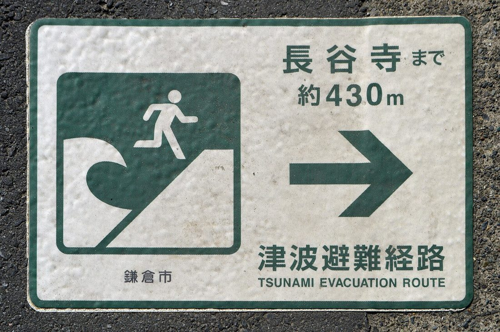

戰爭或大災害中最難、也最關鍵的一個決定，往往是：「現在該逃，還是該留下？」逃錯方向可能衝進更危險的地方；該走卻不走，也可能困在崩塌或污染區。這篇給你一套可以在壓力下快速判斷的原則，以及就地避難與撤離各自的做法與檢查清單。

去留判斷的第一順位永遠是官方指示：政府發布撤離命令就撤，要求就地避難就留。當下沒有明確指示，或情況緊急到來不及等時，用一句話判斷：
「留在這裡會不會立刻受害？外面是不是比裡面更危險？」——若留下會立即受害（建築受損、火災、化學／輻射外洩、洪水逼近），就離開；若外面風險更高（空襲砲擊進行中、道路危險），就先就地避難、等時機。
| 情境 | 建議 | 原因 |
|---|---|---|
| 政府發布撤離令 | 撤離 | 官方掌握全局，服從指示最安全 |
| 建築受損、火災、洪水逼近 | 撤離 | 留下會立即受害 |
| 空襲、砲擊正在進行 | 就地避難 | 移動中最脆弱，外面更危險 |
| 戶外化學／輻射污染 | 就地避難＋密閉 | 密閉室內能降低吸入暴露 |
| 道路癱瘓或不安全 | 就地避難 | 強行撤離反而受困路上 |
撤離講求「快而不亂」。安全允許的前提下，出門前依序完成：
這份清單是「有時間才做」的理想順序。當危險迫在眉睫，人命優先於財物——抓起避難包和家人就走，比收拾整齊卻困在原地更重要。
撤離的速度與方式，要遷就隊伍裡最需要照顧的成員。事先想好這些，才不會臨時手忙腳亂：
這些安排最好事先寫進〈家庭防災計畫〉並分配好負責人，撤離當下照表操課即可。
抵達安全地點或官方收容處所後，別鬆懈：
如果撤離時機已過，立刻切換成就地避難：躲到最安全的內側或地下空間、遠離窗戶、做好保暖與飲水，並設法讓外界知道你的位置——向外地聯絡人回報、在窗口留下明顯的求救標示。持續用收音機或官方管道接收下一個撤離時機與救援資訊（求救方法見〈通訊中斷時如何求救與接收資訊〉）。
去留這道題沒有完美答案，但遲遲不決往往比選錯更糟——道路會愈來愈塞、掩蔽處會愈來愈滿、可用的時間只會愈來愈少。與其反覆糾結，不如平時就想清楚各種情境的判準、事先熟悉撤離路線與就地避難空間，讓真正遇到時能快速決定、果斷行動。決定後就專注執行，別在半路又反悔折返，那才是最容易出事的時刻。
先聽官方指示；沒有指示時看眼前威脅：留下會立即受害就走，外面更危險就先留。
外出風險大於留下時——空襲砲擊進行中、戶外污染、道路不安全。躲內側或地下、關好門窗、等解除。
帶避難包與證件現金、關瓦斯與電源、穿堅固鞋、告知聯絡人去向、確認交通工具，再前往會合點。
看距離與路況：短距離或塞車受損時步行更可靠，長距離暢通時開車較快。都要備好兩條路線。
改就地避難，躲到安全內側、遠離窗戶，設法讓外界知道位置，持續接收官方救援與撤離資訊。
※ 本文為一般民防與避難參考，整理自內政部消防署、NCDR、Ready.gov 等公開資訊，不能取代官方即時指示。撤離與避難請以政府命令與現場指揮為準。